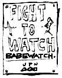

|
Disclaimer: Because we could be liable for anyone who is impatient enough to actually kill themselves after reading this article, we say, "You've never given up on anything in your life! Now live damn it! LIVE!"
The other day, while watching Comedy Central, Bill Mahr said "People say 'Life is precious.' But why is life precious...?" I couldn't agree more. 90% of the American population sits on their collective asses watching TV. But if you were to break into their home and threaten to kill them, they'd either fight for their life or plead for mercy (depending on how lame they are). What are they fighting for? Did they have something they just had to accomplish...after Wheel of Fortune or Bay Watch? Or are they just deluding themselves?
Lets think about this logically and not let superfluous ethics get in the way: inflation occurs when there are more representations of the dollar than there is gold to back it up. The money then loses value. Isn't that exactly what has happened to our society. Again and again people complain that we as a society have been desensitized to violence. No wonder. There are just SO MANY damn people that they don't mean a thing; they have no value (other than workers or numbers on a screen). Face it, if you lived twenty miles from your nearest neighbor, would you hop in your car and buzz by for a drive-by-shooting? If people were rare, we would be ecstatic to meet another human. We wouldn't mumble "Hey, what's up" (all the time avoiding eye contact) and keep walking or simply ignore their presence.
The solution? We think the Greeks had the right idea. Really push the Hemlock tea on the population that had outlived its usefulness. Let's legalize suicide. Think about it. It makes sense. If someone wants to kill themselves, let them. Don't you think it's kind of arrogant to MAKE someone continue living? If you want to be religious about it, God will punish them. At a more practical level, there would be that much more room for people who really enjoy, not just existing, but living. We've even come up with advertisements promoting suicide:
- "Life is for living"
- "Death-because life is so uncertain"
- "Bored with life? Go out with a bang!"
- "Life: what a beautiful choice" (Makes for a wonderful twist on the Pro-life position, huh?)
- "Life: Love it or leave it."
- "Death: the other white meat"(of course you'll have blue lips and sunken eyes too, but we don't have to advertise that.)
The list goes on. Imagine: A wall sized poster of Uncle Sam, that stern, yet strangely loving face (like "Uncle Bob" who touched you when you were 5 and said never to tell or he would cut off all your fingers and the kids would laugh at you because you were a freak), pointing out at you, yes YOU, and saying in no uncertain terms: "I want YOU to die!"
There could be world wide advertising campaign. Catchy tunes, trendy clothing. "Nike and the Population Decimation Board are proud sponsors of The Super Bowl. Put a bullet in your head: Just Do It."
Cost of living would drop, standard of living would rise, no one would have to work at jobs they didn't like. The world would be a much better place if everyone who didn't want to be here just left.
|

|